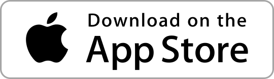

BOX

About me
Experienced iOS Software Engineer with 5+ years of hands-on experience in mobile app development and enthusiasm for exploring new technologies.
Skills
Experience
Projects

Education
Athens University of Economics and Business